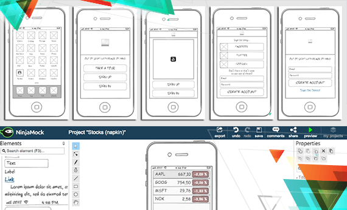

Krify - Webservices
Passionate to create value
Web Design Services

Web design consists of different artistic skills and design disciplines, used in designing of websites. Whether you belong to a corporate enterprise, small-medium business or a non-profit organization, your website primarily represents and promotes the image of your organization. Organizations need working websites which not only displays the contents and information of their organization but also influence effectively the selling of products or services. At Krify, we have different approach in gathering your design requirements, where we not only understand your brand image but also the work flow process which helps us to design a working website which can increase leads and boost up sales..
Responsive Website Development
In the last two decades, we have seen that most our thoughts and imaginations came true. Technology is here to stay and motivate us to create incredible products and apps. Responsive Web has a rare feature which allows design to respond to the user based on his/her system, location and stream. The feature comprises of combination of grids and layouts which can be modified. When the users swap ipad for laptop or any other device, the responsive web changes its resolution to fit the new device with respect to the screen size or resolution or images. It responds to the user’s needs and interests and hence it is known as responsive website. This is relatively new to the knowledge of the web users but is soon catching up in the market and Krify’s team of experts is ready to cater to the needs of its clients who want such responsive sites to be developed..
Web API Development
A web API is the application programming interface (API) for both the web server and web browser. A server-side web API is a programmatic interface to a clear appeal-answer message system, normally expressed in JSON or XML, which is wide-open via the web—most frequently by means of an HTTP-based web server.A client-side web API is a programmatic interface to extend functionality within a web browser or other HTTP client. Originally these were most commonly in the form of native plug-in architectures. However most newer ones target standardized JavaScript bindings.The usage of API grew by leaps and bounds in the last decade. Krify team has exploited the usage of Web APIs to create competitive Software Applications. Our team has the right skills and expertise to achieve the desired results..
Server Backend Development
The back-end development is a part of the application that is never visible to the user but it is the brain of any app out there. It is built with use of server-side language and database. In simpler words, front-end code interacts with a user in real time while back-end code interacts with a server to return user-ready results. Anything displayed on the website is because of the query performed on the server returned data to the front-end.Krify always believes in providing to the varied needs of its clients. A few approach us for the development of Web applications, some want us to preserve their servers, while some reach us to grasp their existing web services to the back-end. A few of them request us to take care of the hosting services. Regardless of the depth and duration of the services essential, we assist them always.